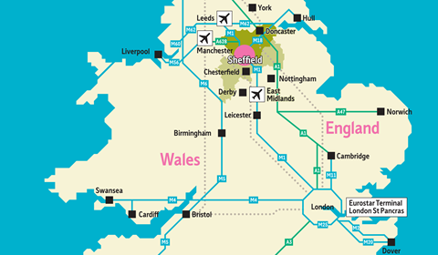

Conference Venue
CHIIR 2024 will be held at three venues. The main conference (11th - 13th) will take place at the Edge; the tutorials, workshops, and DC (10th and 14th) will be at Halifax Hall. Both venues are located within the leafy University of Sheffield student village and are near to the Botanical Gardens and the trendy neighbourhood around Hunters Bar.
The conference banquet will take place at Kelham Island Museum.
Note: we will provide most meals during the conference - this is included as part of your conference registration fee. This includes: breakfasts, lunches, 2 coffee/tea breaks per day from Sunday to Thursday; two receptions on Sunday and Monday, and the conference banquet on Tuesday.
Accommodation
The conference venue has 2 hotels: Halifax Hall (where the workshops, tutorials and DC will take place), and the Jonas Hotel.
A number of rooms have been reserved for booking by CHIIR conference delegates at these hotels. To book one of these rooms, please email katie.brown[at]sheffield.ac.uk
The rate at Halifax Hall includes full breakfast options, while the rate at Jonas includes a hot drink and breakfast pastry only.
Alternatively, you can book a room elsewhere in Sheffield using the CHIIR'24 hotel booking portal.
Getting to Sheffield
Airports
Sheffield is at the heart of the UK, and more importantly the rail and road networks and is around 1 hours’ drive from 3 international airports. The nearest airports to Sheffield are Manchester, Leeds Bradford and East Midlands. Of these, Manchester Airport has the best rail connections to Sheffield and a large number of international flights.
It is also quite easy to get to Sheffield from any of the major London airports (i.e., Heathrow, Gatwick, Stansted and Luton), which offer direct connections to most major worldwide destinations.
Arriving by Train
From Manchester Airport – by train: 1 hour and 22 mins From Manchester Airport catch a train to Manchester Piccadilly and then a connecting service to Sheffield.
From Nottingham East Midlands Airport – by train: 1 hour and 34 mins Take a taxi or the Skyline bus to East Midlands Parkway train station, where you can then catch a direct train to Sheffield.
From Leeds Bradford Airport – by train: 1 hour and 27 minsTake a bus to Leeds City Centre/Leeds City Square and then from the train station catch a train to Sheffield.
From Birmingham Airport – by train: 1 hour and 37 minsTake a train from the Airport to Birmingham New Street and then catch a direct train to Sheffield.
From Heathrow Airport – by train: 2 hours 43 mins From terminal 2 or 3 take the Elizabeth line to Farringdon, then catch the Thameslink from Farringdon to St Pancras and then a direct train from there to Sheffield.
Exploring Sheffield
Recommendations for food and drinks from the conference organisers.
Top Free Things to See & Do
- Botanical Gardens - registered by English Heritage as a Grade II site of special historic interest. Winding paths connect over 18 different garden areas based on geographical or botanical themes. Only a 5-minute walk from the conference venues.
- Endcliffe Park - Comprising parkland and woodland, it is the first in a series of parks and green spaces, known collectively as Porter Valley Parks, all of which lie along the course of the Porter Brook, leading all the way out to Peak District. Only a 5-minute walk from the conference venues.
- Kelham Island and Museum - once the beating industrial heart of Sheffield's steel and cutlery-making industries, Kelham is now Sheffield's trendiest neighbourhood. The home to some great pubs, a thriving restaurant scene (including the cavernous Cutlery Works food hall), and the Kelham Island Museum, where the conference banquet will take place.
- The Millennium Gallery - a changing exhibition programme showcases the best in national and international art and design alongside the region’s remarkable creative talents.
- Sheffield Cathedral - an unusual mixture of medieval and modern architecture with sections dating from the 13th century and a 15th-century tower.
- Weston Park Museum and Park - tells the stories of Sheffield and its people, from prehistory to present day. Originally opened in 1875, Weston Park Museum has found lifelong fans in younger visitors and grown-ups alike for nearly 150 years. Situated in a beautiful Victorian park next to the main University of Sheffield building.
- The Winter Garden and Peace Gardens - Visit one of the largest temperate glasshouses in the UK - a stunning green world in the heart of the city.